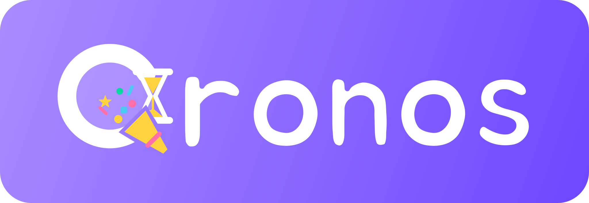

くろのす 〜Qronos〜
記念日・カウントダウン
日付を入れるだけで「あと何日？」「今日で何日目？」がいつでもわかるページができます。LINEにカードで送れます。
できました 🎉
「LINEで送る」を押すと、おくるんで日付入りのカードを作って送れます。受け取った人はカードのボタンから、いつでも最新の「あと何日？」を見られます。
⏳ 「くろのす」という名前について
ギリシャ神話で「時」そのものを表す神、クロノス（Chronos）から名付けました。年表を意味する chronology や、正確な時計の chronometer の「chrono」も、この「時」を表すことばから来ています。
ゼウスの父である農耕の神クロノス（Kronos）とは呼び名が同じで昔から混同されてきましたが、別の神です。大きな鎌と砂時計を持つ「時の翁」の姿は、この2柱が重ねられて生まれたといわれます。
エンジニアにはおなじみの、決まった時刻に処理を動かす Unix の cron（定期実行）も、名前はこの chronos（時）から来ているといわれます。毎年の記念日をくり返し数えるのは、ちょっと cron に似ています。
くろのすは、記念日までの「あと何日？」や、はじまりの日からの「今日で何日目？」を見守るツールです。英字の Qronos は、おくるん（OQRN）と同じように頭の音を Q にしたもの。ロゴの Q は Chronos の C を形にしたもの。C の欠けたところに砂時計をはめて「時を測り」、しっぽのクラッカーから輪の中へ紙吹雪がはじけて「その日が待ち遠しい」気持ちを表しています。